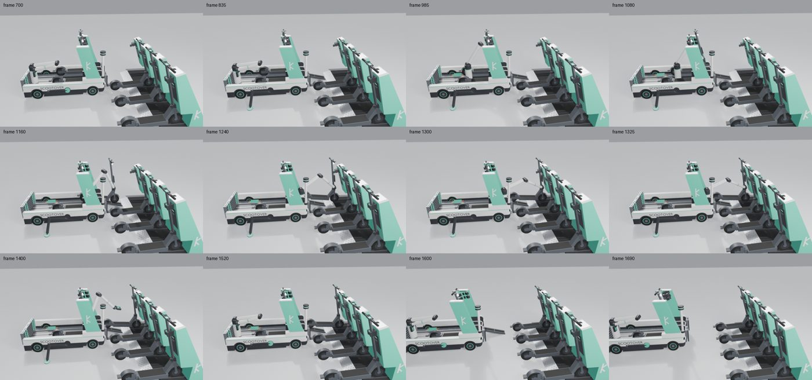
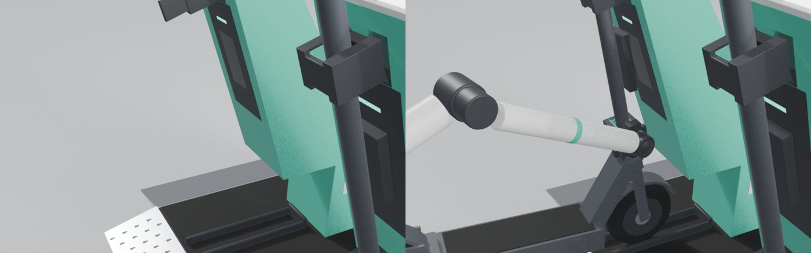
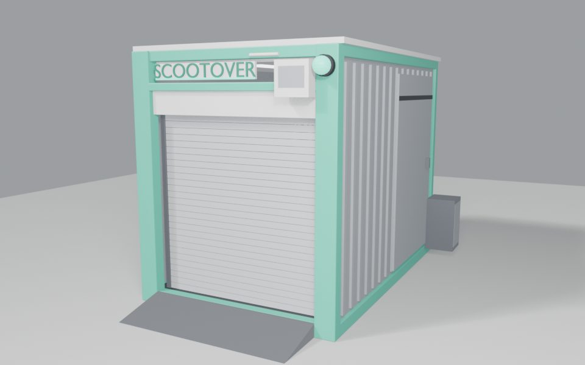
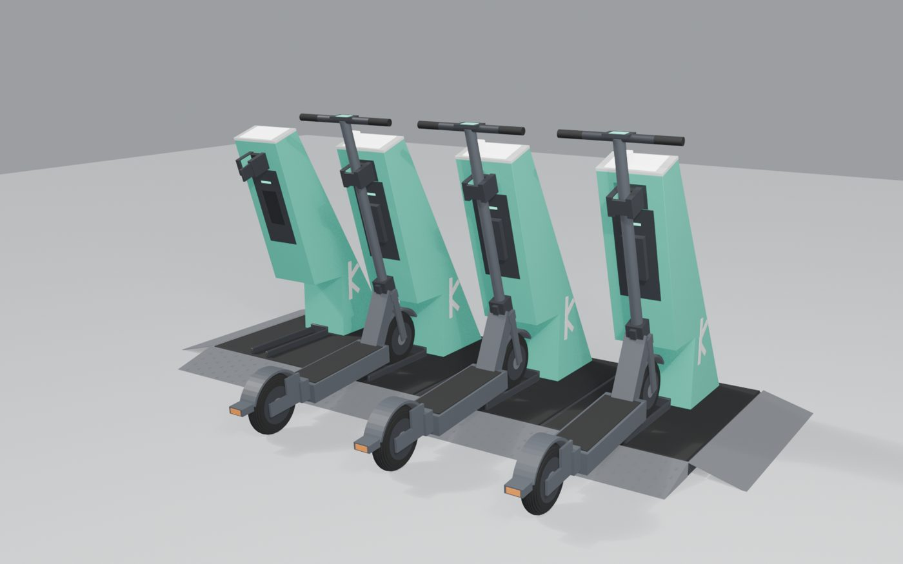

수거 요청을 받으면 스스로 찾아가 킥보드를 확인하고 실어서, 상태에 맞는 구역(일반 · 충전 · 고장 분류)에 세워 두고 도크로 돌아와 충전하는 ROS 2 시스템입니다.

경북대학교 캠퍼스를 옮긴 시뮬레이션 맵 위에서, 사람이 개입하지 않고 요청 접수 → 대기열 → 접근 → 카메라 확인 → 적재 → 하역 → 충전 까지 한 바퀴를 돕니다. 노드와 인터페이스는 시뮬레이터와 분리되어 있어, 같은 코드를 Gazebo Harmonic 과 가벼운 kinematic 모드에서 모두 실행할 수 있습니다.
무엇을 하나요
📥
요청 접수와 대기열킥보드 펌웨어 판정(넘어짐·구역 밖·배터리)과 사용자 신고를 받아 점수식으로 순서를 정합니다.
🧭
운동학 제약 주행Hybrid A* + Dubins 곡선으로 회전 반경을 지키며 좁은 캠퍼스 길을 지나갑니다.
📷
현장 확인AprilTag 로 실물 여부와 정확한 위치를 확인하고 GPS 오차를 보정합니다.
실선은 토픽, 굵은 민트선은 액션, 점선은 서비스입니다. 주황 점선 상자는 시뮬레이션 전용 노드입니다.
노드 목록
노드
기능
역할
request_gateway
요청 검증, 위경도 → map 좌표, 순번 응답
B
queue_manager
대기열 · 점수식 · 병합 · 취소 · 자동 취소 · SetConfig · RViz 마커
B
mission_manager
상태 머신, 대상 선택, 하역지 결정, /robot_status, /admin_alerts. 캠퍼스 맵에서는 mission_manager_campus 판이 같은 이름으로 뜸
D
collector
CollectScooter: 이동 → 확인(회전 탐색) → 정렬 → 적재
D
battery_manager
가상 배터리 (거리 × k1 + 시간 × k2)
D
nav_bridge
GoToPose ↔ 간이 주행(Hybrid A*) 또는 Nav2
C
dock_controller
DockToCharger: 충전소 접근 → 도킹
C
sim_lidar시뮬
지도 + 킥보드 정답 위치로 360빔 /scan 생성
C
sim_localizer시뮬
정답 위치로 map → odom 보정
C
scooter_fleet_sim시뮬
시나리오 재생, 킥보드 상태·GPS 노이즈, 이벤트
A
sim_tag_detector시뮬
카메라 FOV 62° · 3 m 안의 AprilTag 검출 흉내
A
arm_loader시뮬
로봇팔 적재·하역 애니메이션 (Load/UnloadScooter)
A
status_panel시뮬
Gazebo "Kickboard status" 패널
A
ops_monitor
운영 상황 문장 /ops_status, 실행 기록 JSONL, 마커
A
fake_base시뮬
Gazebo 없는 kinematic 베이스 (sim:=kinematic)
A
로봇과 환경 모델

SCOOTOVER v19 — 뒤쪽 경사로와 로봇팔. 적재 레인 2개(capacity 2), 로봇은 킥보드 앞 2.07 m 에 같은 방향으로 서서 후진 진입합니다.

로봇 스테이션 (도크)셔터와 경사로가 있는 차고. 로봇이 대기·충전하는 곳.

킥스팟 (거치대)일반 슬롯 8칸 + 고장 분류 2칸, 충전 주차구역은 스탠드 8칸.
모델은 생성물입니다
로봇 · 스테이션 · 거치대 모델은 Blender 내보내기 → build_blender_models.py 로 만듭니다. model.sdf 를 손으로 고치지 말고 생성기를 고치세요.
미션 상태 머신
mission_manager 는 11개 상태를 오가며 수거 · 하역 · 충전을 결정합니다. 상태는 /robot_status.state 로 나갑니다.
상태 설명
상태
뜻
IDLE
도크에서 대기. 시작 시 배터리 계수를 받은 뒤 선택으로 넘어감
SELECTING
/queue/select_next 로 다음 대상 결정. 하역 · 복귀 판단도 여기서만 (비선점)
NAVIGATING
CollectScooter 의 접근 단계 (킥보드 GPS 점 근처까지)
VERIFYING
카메라로 태그 확인. 안 보이면 회전 탐색 (기본 10 s)
LOADING
정렬 자리로 이동 후 로봇팔 적재
DROPPING
목적지 구역 앞에서 슬롯마다 멈춰 하역
RETURNING · DOCKING
도크로 복귀, /dock_to_charger 로 진입
CHARGING
charge_target_pct(80%) 까지 충전
FAILED
대상 실패 처리 후 다음 선택으로
NEEDS_HUMAN
도킹 반복 실패 등: 정지 후 관리자 처리 대기
수거 단계 (CollectScooter)
NAVIGATING — approach_standoff 1.8 m 떨어진 접근 지점으로 이동
VERIFYING — 태그로 실물 확인, 태그 위치로 킥보드 중심을 보정 (corrected_pose)
ALIGNING — align_spot_mode: scan: 지도 + 진입 금지 + 라이다로 팔이 닿는 자리 후보를 채점. 막히면 align_wait_sec 기다리고, 그래도 안 되면 다른 각도(90°, −90°, 180°)로
LOADING — /arm_loader/load 호출. 서버가 없으면 load_time_sec 정지로 대신
대기열과 우선순위
모든 요청은 점수가 가장 높은 것부터 처리됩니다. 사유 · 대기 시간 · 거리를 한 식으로 묶습니다.
점수식
score = w_r · R(사유) + w_t · 대기(s) − w_d · 거리(m)
점수는 SelectNextTarget 이 호출될 때(로봇이 SELECTING 일 때) 로봇 위치 기준으로 다시 계산됩니다. 수거 중에는 대상을 바꾸지 않습니다(비선점).
맵
w_r
w_t
w_d
d_max
t_max
경북대 캠퍼스 (knu_*)
100
0.5
1
1200 m
3000 s
교실 맵 (기본값)
10
1
5
12.8 m
84 s
캠퍼스 맵은 w_d = 1 이라 점수 1점 = 1 m 로 읽힙니다. 사유 가중치 1 차이 = 100 m, 대기 1분 = 30 m 입니다.
요청 사유
사유
코드
R
출처
통행 방해 신고 OBSTRUCTION
5
4.0
사용자 신고
넘어짐 FALLEN
1
3.0
펌웨어: 기울기 > 45°
고장 BROKEN
4
2.5
펌웨어 자가진단
불법 주차 OUT_OF_ZONE
2
2.0
펌웨어: 구역 밖
신고 접수 REPORTED
6
2.0
사용자 신고
정렬 불량 MISALIGNED
7
1.5
거치대 6 m 안, 슬롯 밖
배터리 부족 LOW_BATTERY
3
1.0
펌웨어: < 20%
경계값
정확히 45° · 20% 는 정상으로 봅니다. 자동 취소는 반대 조건(≤ 45°, 구역 안, ≥ 20%)을 모두 만족할 때입니다.
기아 방지 상한 t_max
t_max = (w_r · ΔR_max + w_d · d_max) / w_t
보장하는 것은 "1번보다 t_max 이상 늦게 들어온 요청은 1번을 앞지르지 못한다" 입니다. 먼저 들어왔거나 t_max 안에 들어온 요청에는 밀릴 수 있으므로 "t_max 안에 반드시 선택된다"는 보장이 아닙니다.
같은 킥보드 요청 병합
펌웨어 판정끼리는 최신 상태를 따릅니다 (구역 밖 → 넘어짐, 다시 세워지면 배터리 부족으로 내려감).
사용자 신고가 끼면 가중치가 높은 사유를 남깁니다.
신고 위치는 GPS 오차가 커서 이미 들어온 요청의 위치를 덮지 않습니다.
목적지 분류 정책
실은 킥보드마다 상태를 보고 어디에 내려놓을지 정합니다.
우선 순서
고장 → 일반 구역 거치대의 고장 분류 칸 (반대 방향으로 세움). 배터리가 부족해도 충전하지 않습니다.
배터리 < 20% → 충전 주차구역 스탠드
그 외 → 일반 구역 슬롯
각 킥보드는 남은 칸이 있는 가장 가까운 구역으로 갑니다. 하역은 슬롯마다 한 번씩, 슬롯 1.6 m 앞에 멈춰서 합니다.
칸이 모자랄 때
상황
동작
시나리오
가까운 충전 구역 만석
다음으로 가까운 빈 충전 구역
k13
캠퍼스 전체 충전 칸 포화
일반 슬롯에 세우고 "충전 대기" 표시 + 관리자 알림
k14
가까운 일반 구역 만석
다음 구역으로
k18
고장 분류 칸 부족
다른 구역의 고장 칸
k19
충전 스탠드 고장
그 칸은 제외
k22
구역 일시 폐쇄
목적지 후보에서 뺌
k23
근처 하역
배터리가 정상이고 내릴 킥보드를 싣고 있을 때, 가장 가까운 하역 자리가 opportunistic_drop_dist(기본 2.0 m) 안이면 다음 대상을 고르기 전에 들러서 내립니다. 0.0 이면 끕니다.
주행과 경로 계획
nav:=simple 백엔드는 차체 크기와 회전 반경을 고려하는 운동학 제약 경로 계획(kinematic_planner.py)을 씁니다.
계획
(x, y, 방향) 공간의 Hybrid A*, 도착 자세는 Dubins 곡선으로 맞춤
최소 회전 반경 min_turn_radius 0.8 m, 계획은 여유 1.25배(1.0 m)
경로 중간 제자리 회전 없음. 출발·도착점에서 공간이 있을 때만 (pivot_at_ends)
좁은 곳은 후진 허용 (비용 2.5배, 전·후진 전환 벌점, allow_reverse)
계획이 두 번 실패하면 그 목표만 예전 격자 A* 로 (kinematic_planning: false 로 끌 수 있음)
충돌 검사
차체를 원 3개로 덮어 경로 위 모든 자세(0.1 m 간격)를 정적 지도 + 라이다 장애물과 검사합니다. 인도(진입 금지 구역)는 벽이 아니라서, 바퀴(구동축 중심)만 경계에서 0.47 m 떨어지면 차체 앞부분은 나가도 됩니다.
코스트맵과 라이다
코스트맵 = 정적 지도 + 라이다로 본 장애물(맞은 칸은 60초 기억, 빔이 지나간 칸은 비움). 경로는 1초마다, 새 장애물이 경로를 막으면 즉시 다시 계획합니다.
왜 sim_lidar 인가
개발 VM(ogre1)의 Gazebo gpu_lidar 는 모든 빔에 0.12 m 만 내서 쓸 수 없습니다. sim_lidar 가 정적 지도 + 킥보드 정답 위치로 360빔을 쏴서 /scan 을 만듭니다. x86 + ogre2 PC 에서는 gz_bridge.yaml 에 /scan 을 다시 넣으면 실제 센서로 돌아갑니다.
실패와 재시도
nav_bridge 는 목표당 최대 max_retries(2) 번 다시 시도합니다. 실패 사유는 pose unavailable · scan unavailable · no safe approach point · no path 로 구분해 GoToPose 결과 message 에 담습니다.
인식과 도킹
킥보드 확인과 도킹은 AprilTag 검출 결과(/tag_detections)를 씁니다.
AprilTag 검출
모드
동작
perception:=sim기본·발표
sim_tag_detector 가 정답 위치 + 카메라 FOV 62.2° · 최대 3 m · 노이즈로 검출을 흉내. 카메라 렌더링 생략
perception:=apriltag
실제 카메라 영상 + apriltag_ros → apriltag_adapter. 향후 확장용
킥보드 방향은 면마다 다른 태그 ID(base + 150 × face)로 알아냅니다. 지표 수치는 "시뮬레이션 검출 기준"으로 표기합니다.
도킹 모드
dock_mode
동작
쓰임
snap (기본)
충전소 앞까지 주행 → 도킹 자리로 들어간 뒤 시뮬레이터에서 자리 맞춤 (Gazebo set_pose / kinematic /sim/set_robot_pose). 항상 성공
시나리오 실행
precise
pre-dock → 태그 기반 P 제어로 정밀 진입
정밀 도킹 시연 · 도킹 오차 측정
지표 주의
snap 모드의 도킹 오차(거의 0)는 시뮬레이터가 맞춘 값입니다. 도킹 성능 지표는 precise 로 측정하세요 (목표 ≤ 5 cm, ≤ 5°).
통신부와 가공부
노드 연결은 단순하게 고정하고, 노드 안의 계산은 ROS 를 모르는 파이썬 모듈로 분리합니다.
구독 / 서비스 요청 / 액션 목표 # 통신부: <노드>.py
│ ROS 메시지 → 파이썬 값
▼
가공 함수·클래스 # 가공부: <영역>_logic.py, planner.py ...
│ rclpy 를 import 하지 않음 → 단위 테스트·벤치마크가 바로 된다
▼
발행 / 서비스 응답 / 액션 결과 # 통신부
규칙
가공부는 rclpy · 메시지 타입을 import 하지 않습니다 (numpy · scipy · yaml 은 가능).
통신부는 메시지 변환, 파라미터, 타이밍, 로그만 맡습니다.
토픽 이름 · 메시지 · 노드 이름 변경은 "통신부 변경"이라 팀에 미리 알립니다.
노드 ↔ 가공부
노드
가공부
request_gateway
gateway_logic, geo
queue_manager
queue_book, queue_logic
mission_manager
mission_logic (Cargo, ChargerSlots), drop_zones
collector
collector_logic
dock_controller
dock_logic, motion
nav_bridge
nav_logic, kinematic_planner, planner, motion
battery_manager
battery_logic
sim_lidar · sim_tag_detector · sim_localizer
lidar_logic · tag_sim_logic · localizer_logic
측정
python3 tools/bench_logic.py [이름 일부] # 가공 함수 1회 비용 (ROS 없이)
KICKBOARD_PROFILE=1 ros2 launch kickboard_sim bringup.launch.py ... # 노드 안 실제 비용
시나리오 실행하기
run_all_knu.sh 로 시나리오를 하나 또는 여러 개 연속으로 돌리고, 끝나면 요약과 리플레이를 받습니다.
하나만 돌리기
./run_all_knu.sh --gui --rtf 4 k04
시나리오 주변만 잘라 만든 작은 world 에서 4배속으로 돕니다. 로봇이 도크로 돌아와 --grace(200 s) 동안 새 일이 없으면 끝나고 다음 시나리오로 넘어갑니다.
ros2 bag record -o bags/k08 /mission_events /robot_status /queue_status
분석
ros2 run kickboard_robot analyze bags/k08
수거 성공률, 최대/평균 대기 시간, 도킹 위치·방향 오차, GPS 오차 vs 카메라 보정 후 오차가 나옵니다.
측정할 때는 하나만
VM 부하가 크면 rosbag 기록이 늦게 시작돼 앞부분 이벤트가 빠질 수 있습니다.
시나리오 만들기·고치기
경북대 시나리오 YAML 은 생성 스크립트가 만듭니다. YAML 을 직접 고치지 말고 스크립트를 고칩니다.
다시 만들기
python3 src/kickboard_sim/scripts/build_knu_scenarios.py # 시나리오 (좌표·접근·조건 검사)
python3 src/kickboard_sim/scripts/build_scenario_worlds.py # 시나리오 전용 작은 world
python3 src/kickboard_sim/scripts/build_knu_campus.py # 캠퍼스 맵 전체 (약 40초)
colcon build --packages-select kickboard_sim && source install/setup.bash
스크립트는 장소(건물 출입구, 보행로, 잔디, 슬롯)로 적힌 시나리오를 맵 좌표로 바꾸고 다음을 검사합니다: 캠퍼스 안 · 건물/물 위 아님 · 킥보드끼리 1.1 m 이상 · 도크에서 킥보드 옆까지 도달 가능 · 시나리오가 노리는 조건 성립.
GoToPose · collector, dock_controller → nav_bridge. 우리 인터페이스와 주행 백엔드 사이의 경계입니다.
geometry_msgs/PoseStamped target_pose
float32 standoff # >0 이면 target 에서 로봇 쪽으로 이 거리만큼 떨어진 곳이 목표
---
bool success
uint8 attempts
string message
---
float32 distance_remaining
uint8 attempt
/arm_loader/load · /arm_loader/unload시뮬
LoadScooter / UnloadScooter · sim:=gz 전용. 서버가 없으면 collector 는 load_time_sec 정지로 대신합니다.
# LoadScooter
string scooter_id
---
bool success
string message
uint8 slot # 실린 칸 (0 = 맨 뒤)
---
string phase # REACH / DESCEND / GRIP / LIFT / SWING / PLACE / RELEASE / RETRACT
float32 progress
# UnloadScooter
string scooter_id
bool remove_only # true: 애니메이션 없이 지움 (충전 끝나 치움)
bool keep_as_cargo # true: 충전 자리에 세우되 정상 킥보드로 되돌리지 않음
geometry_msgs/Pose target
---
bool success
string message
geometry_msgs/Pose placed_pose
---
string phase
float32 progress
메시지
kickboard_interfaces/msg
ScooterState
킥보드 펌웨어가 주기적으로 내보내는 상태.
string id
float64 lat
float64 lon
float32 tilt_deg
float32 battery_pct
bool in_parking_zone # 캠퍼스: 슬롯에 바르게 서 있음 (거치대 센서)
string fault # 고장 코드, 빈 문자열 = 정상
bool in_slot_area # 거치대 6 m 안이지만 슬롯 밖 → 정렬 불량
builtin_interfaces/Time stamp
RobotStatus
float32 battery_pct
uint8 load_count
uint8 capacity
string state # 미션 상태 머신 참고
string current_target_id
QueueItem · QueueStatus
string STATUS_WAITING=WAITING STATUS_IN_PROGRESS=IN_PROGRESS STATUS_DONE=DONE
string STATUS_FAILED=FAILED STATUS_NEEDS_HUMAN=NEEDS_HUMAN STATUS_CANCELLED=CANCELLED
string id
uint8 reason
float32 wait_sec
float32 score
string status
float64 x # map 좌표 (GPS 변환값, 카메라 보정 후 갱신)
float64 y
uint8 nav_failures